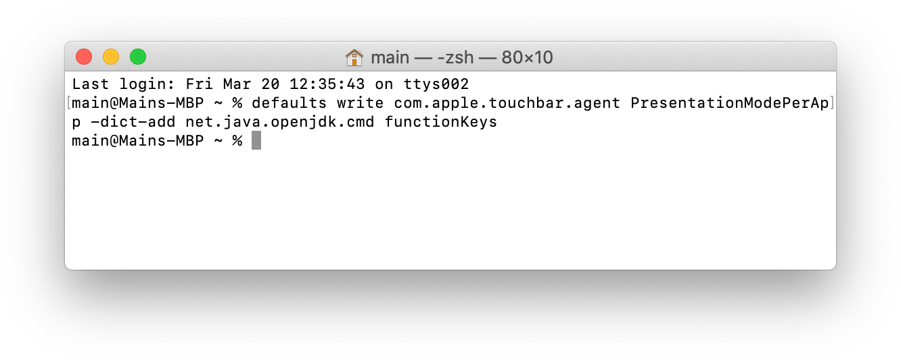
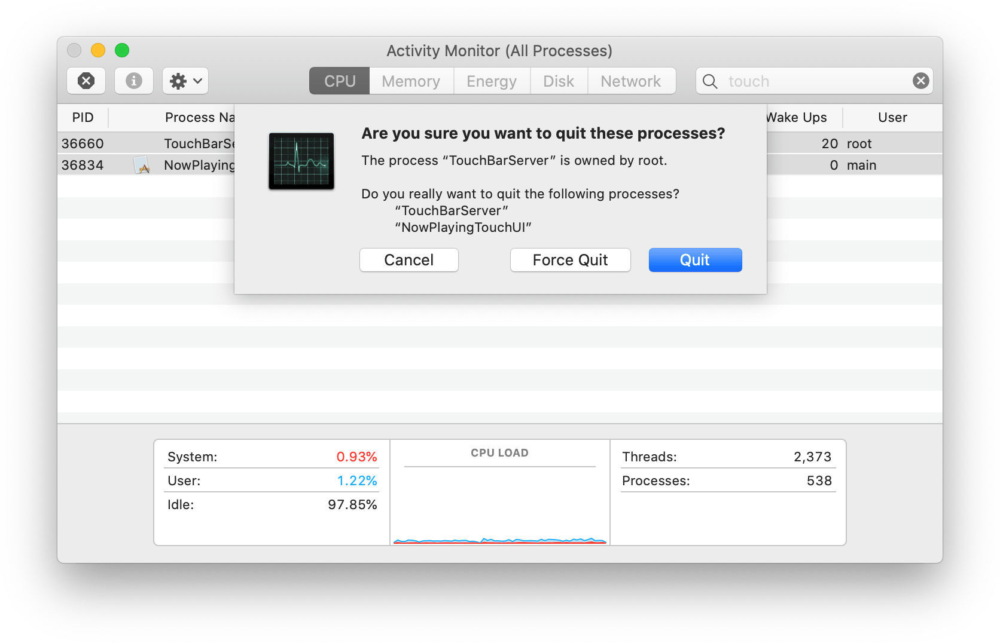

Opening System Preferences and navigating to
Keyboard > Shortcuts > Function Keys does not allow you to add
the Java executable so that you can use the numbered function keys on the Touch Bar while playing Minecraft Java Edition.
Fortunately, you can work around this limitation with a simple terminal command.
- Open Terminal
There are a few ways to do this. You can open /Applications/Utilities in the Finder and double-click Terminal,
or you can search for Terminal in spotlight.
-
Paste the following command into terminal and press return:
defaults write com.apple.touchbar.agent PresentationModePerApp -dict-add net.java.openjdk.cmd functionKeys

This will add Java to the list of programs set to display the numbered function row keys. It will not be visible in the
System Preferences window.
-
Open Activity Monitor.
You can open this program with spotlight or by navigating to /Applications/Utilities
in Finder like you did to open Terminal.
-
Search for
touch and select all listed TouchBar processes. There may be more than just TouchBarServer listed.
Select them in the list, press the gray x button in the toolbar, then press Quit on the dropdown.

The TouchBar should go blank and then re-appear.
-
Open Minecraft. The TouchBar should show the numbered function row keys instead of the Control Strip and a large blank space.
Once you have followed these steps, you can use the function row keys to easily bring up the debug screen, switch cameras, and take screenshots
without needing to press FN.
Shortcut commands for power users 🔗
Enable: defaults write com.apple.touchbar.agent PresentationModePerApp -dict-add net.java.openjdk.cmd functionKeys && sudo killall TouchBarServer NowPlayingTouchUI ControlStrip